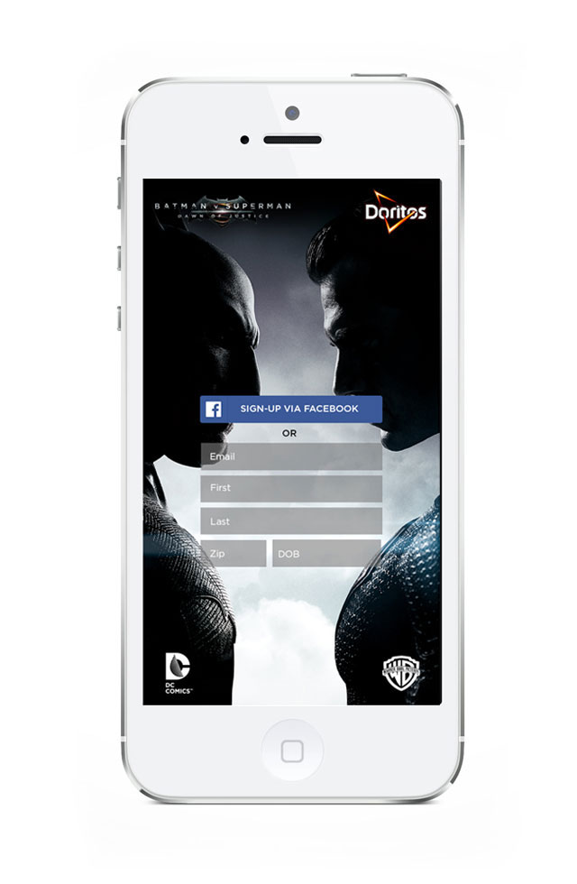

DORITOS - UX & UI

THE PROJECT
This project was a concept that I completed while interning at 14Four. Doritos and WB came to us and asked to see what we could come up with for a code entry that would entice users to enter codes from bags of Doritos.
THE PROCESS
I began by researching our target demographic and ways to engage users to enter codes. From there I created a user flow that was very basic. It only included profile set-up, choosing a side (whether that was Batman or Superman), code entry, and view progress. With the short time frame we had, I then sketched out some very surface level wireframes to brainstorm ideas about the design and layouts. Once the wires and flows had been completed, I moved into the UI design aspect of the project.

THE SOLUTION
In order to present the users with a low barrier for entry, I included the option to sign-up via Facebook. Also, the concept was designed to allow the user to tap on the characters' silhouettes as an easy and unique way of choosing their side.